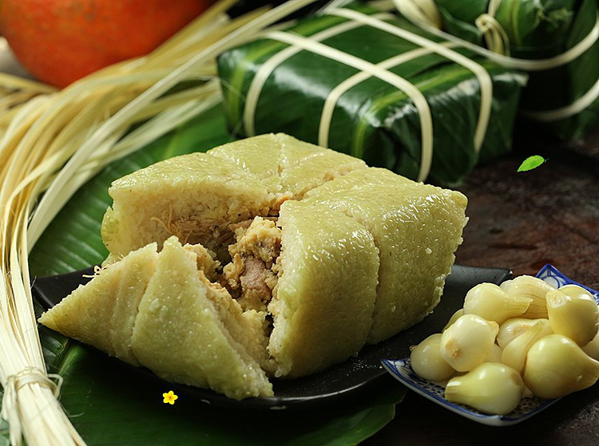

Traditional Tết foods include Banh Chung (bánh chưng) and Banh Tet (bánh tét), both made from mung beans, fatty meat, spices, and fragrant sticky rice, wrapped in green phrynium or banana leaves. The square shape of Banh Chung represents the Earth, while the cylindrical shape of Banh Tet symbolizes the sky. Banh Chung and Banh Tet are not only delicious dishes but also symbols of Tet, carrying deep meanings of gratitude to ancestors, family reunion, and prayers for a happy and prosperous new year. In addition, braised pork, pickled onions/ leeks, and candied fruits are also served, each representing health, prosperity, and family unity.
Banh chung (Square sticky rice cake)
Banh tet (Cylindrical sticky rice cake)

Thit kho trung (Braised pork with eggs)

Dua kieu (Pickled leeks)